- 実験計画法の主な手順
- 因子を整理する。
- 「実験計画(DOE)」 >>> 「カスタム計画」
- 交互作用を設定したい場合は、「モデル」で「交互作用」 >>> 「2次」を選択する。
- 計画を作成すると、最適な実験計画を提示してくれる。
- 実験計画に基づいて、実験を行い、応答を記入する。
- 応答の分析画面に進む。
- たくさんの変数を、小数の重要な軸（主成分）にまとめて、データの構造を見やすくする手法
- 量のフロー（流れ）を可視化した図
- 量のフロー（流れ）を可視化した図
- 多項目のパラメータの相関を見れる。
- GlobalAddressを用いて、データを結合する場合
- 再コード化
- 連続変数をカテゴリ化する
- データの書き出し
- グラフの書き出し
選択ツール ➡ タイトル部をクリック ➡ 右クリックして、コピー ➡ エクセルなどに貼り付け
実験計画法（DOE）
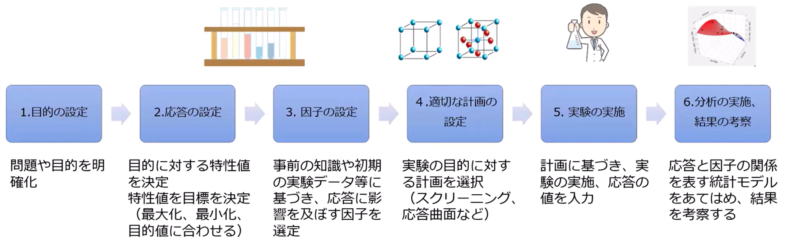
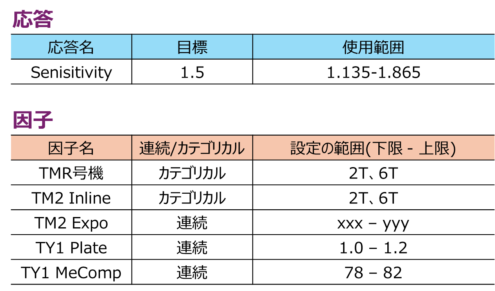
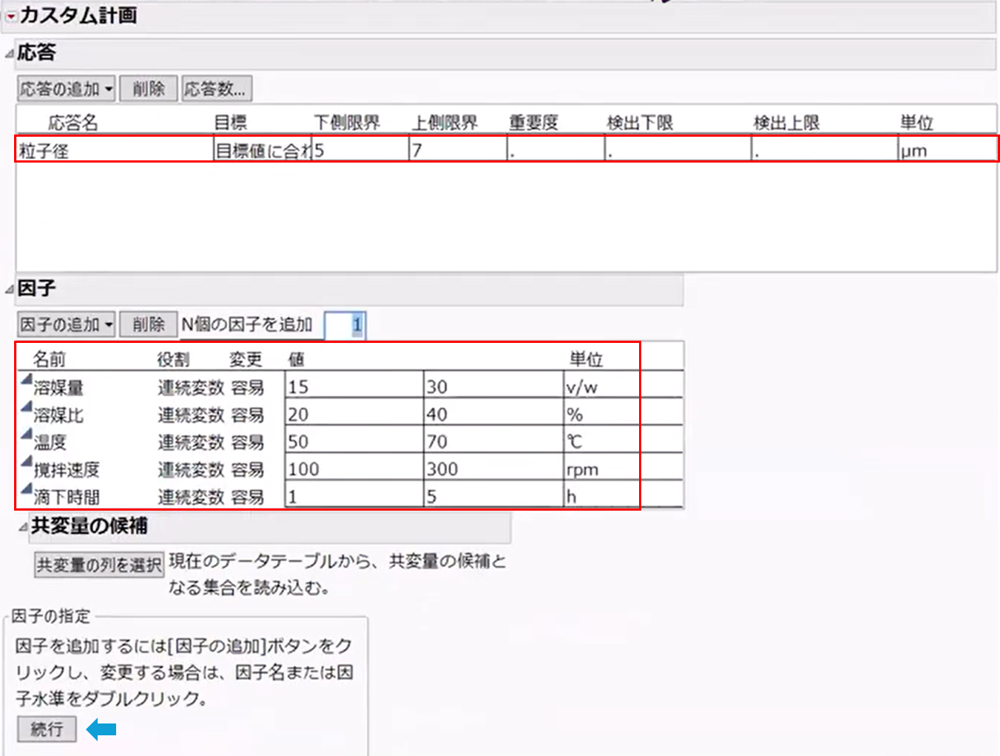
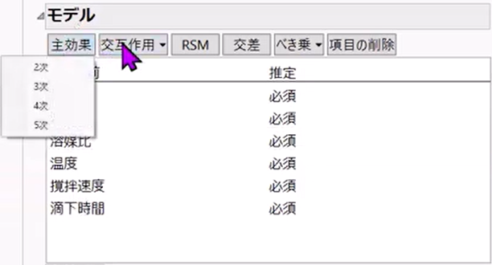
実験の回数は「デフォルト値」が推奨。「計画の作成」をクリックする。
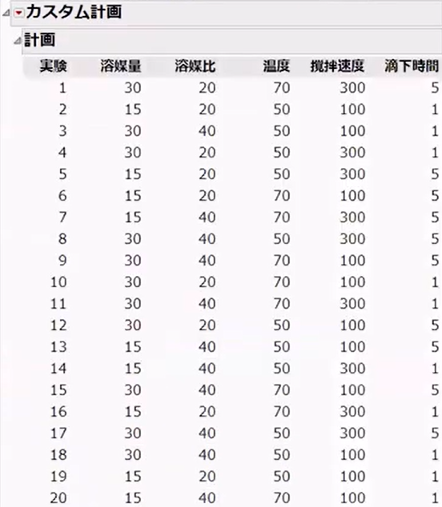
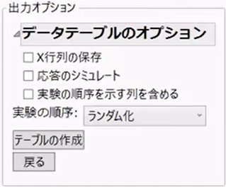
「テーブルの作成」を押すと。テーブルを作成してくれる。
テーブルの左上の「▲モデル」のスクリプトをクリックすると、「モデルの指定」の画面に進む。
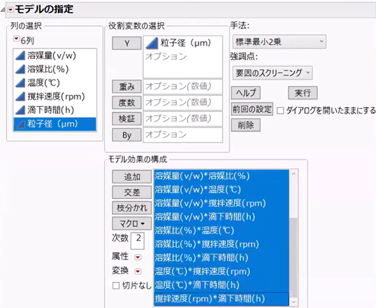
「実行」ボタンを押す。
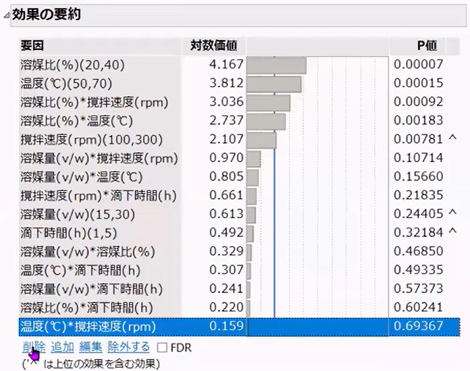
「効果の要約」でp値が低く、効果があると認めがたい因子を削除していく。（誤差へのプーリング）
主成分分析(PCA)
「分析(A)」 >>> 「多変量」 >>> 「主成分分析」
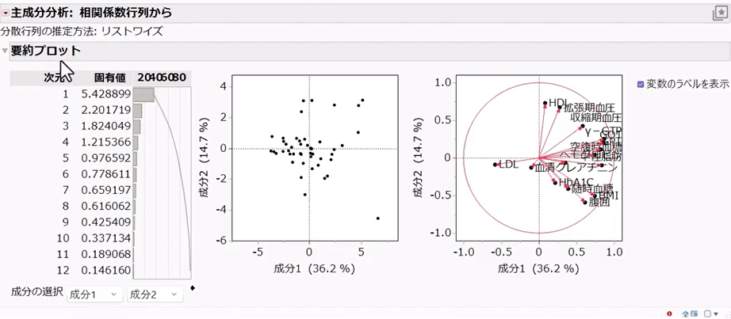
左のグラフ：各成分の固有値
中央のグラフ：第１成分、第２成分のスコアプロット
右のグラフ：負荷量プロット
赤三角からバイプロットを表示させると、lotと検査項目や品名と検査項目を同時に解釈することができる。
正規化（前処理）
方法1. 各項目ごとにZスコア : z = (𝑥−平均) / 標準偏差
方法2. 規格基準 : x′ = x−ターゲット / 規格幅
フェーズ1
製品 × 平均・σでPCA
フェーズ2
ウエハー単位でPCA
フェーズ3
座標パターンを入れる
クラスター分析
「分析(A)」 >>> 「クラスター分析」 >>> 「階層型クラスター分析」
検査項目をまとめて「Y,列」に入れる。
「赤三角」 >>> 「カラーマップ」 >>> 「選択」
適当な色を選ぶ
「赤三角」 >>> 「クラスターの色分け」
樹形図上にある◇をスライドさせることで、クラスター数を変更できる。
クラスターの分類はデータテーブルの行属性に反映されるので、他のグラフにも色分けが反映される。
「赤三角」 >>> 「クラスターの要約」で各クラスターの特徴量を確認できる。
Y列:L_Voffset
属性のID:ChipX、ChipY
対称のID:lot
サンキーダイアグラム
JMPでは、「グラフビルダー」の「パラレルプロット」機能で描ける。
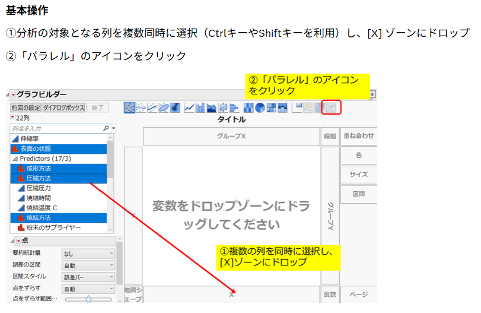
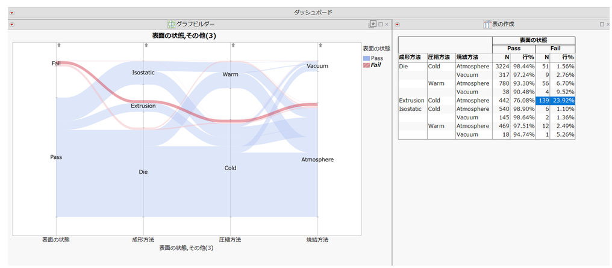
散布図行列
「分析(A)」 >>> 「多変量」 >>> 「多変量の相関」 >>> 右上の星マーク >>> 「サンプルのプリセット」 >>> 「散布図行列と優位性円」
管理図
分析(A) >>> 品質と工程 >>> 管理図ビルダー
y軸に検査値、x軸に時間やlotを入れる。
tips
テーブル(T) ➡ 結合(join) ➡ 対応する列「対応」にGrobalAddressを選択する。
列(c) ➡ 再コード化 ➡ 合体させたい列を選択 ➡ 右クリック？ ➡ 1にグループ化 ➡ 新しいラベル名「RH-8T,RH-9T」 ➡ 再コード化をクリック
列 ➡ ユーティリティ ➡ カテゴリ化の計算式の作成 ➡ いくつかの列を選択し、「-」を押して、必要なカテゴリ数にする（例えば0.5以上と0.5未満に分ける。3つに分けて規格値下限NG、規格値内、規格値上限NGに分けることが多そう。） ➡
ファイル ➡ 書き出し ➡ イメージやhtmlなどに書きだし可能